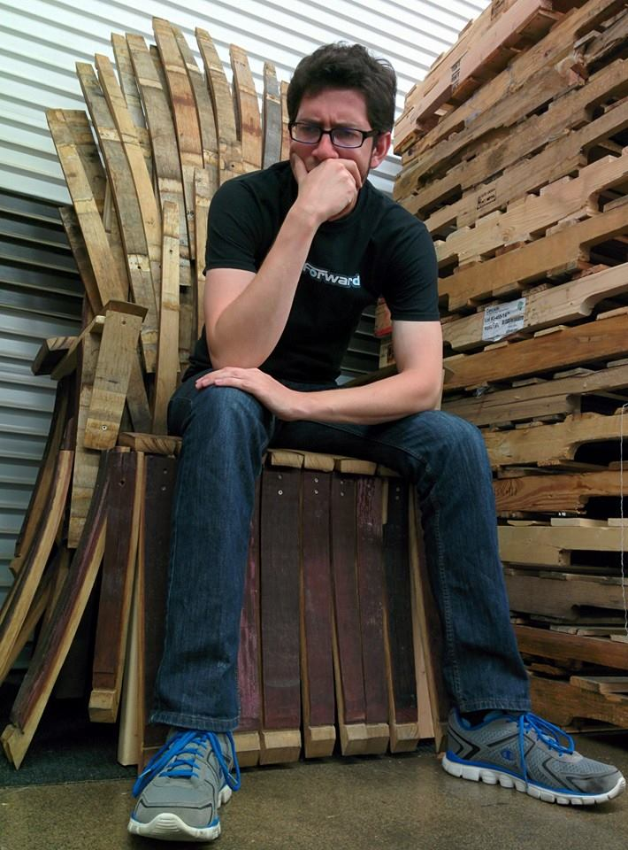

Steve is a software developer and business IT consultant by trade. He works for Pariveda Solutions, an excellent company. He is not typically one to proselytize unsolicited, but he truly feels lucky to work for such a supportive, successful, familial, and quickly growing organization. He has learned many tons about software development, business strategy, consulting, networking, and life in general, among other things, from his time with Pariveda so far, and hopes to continue to do so for many years to come.
In May of 2016, Steve graduated as an M.S. in Computer Science with departmental honors from California State University, Northridge. It was a long, hard-fought battle getting through that program while entertaining over a year's worth of extensions to an enjoyable, educational, and profitable internship experience with Boston Scientific.
While working on his Master's and internship work, Steve also worked on side projects to broaden his experience, knowledge, and skill set toward the goal of growing in his career as a professional software engineer. These include CYOAG, the site you're visiting now, as well as How Many Drinks, a simple-but-effective static website to help beer lovers keep their drinking habits in perspective. (also hosted on GitHub).
There is more to Steve than just his value as a software developer (thank goodness). He also enjoys geeking out over sci-fi and fantasy in print, film, TV, video games, and other formats; loves playing Ultimate Frisbee; feels at home on motorcycle touring trips; plays guitar from time to time; deals professionally in puns; and is working on his second novel.
If you're interested in following or contacting Steve, you can reach him on his oft neglected (but always monitored) Twitter account, @tknkldfklty.
All software written to support the CYOAG project is protected under the GNU GPL v3.0 license. For additional copyright information, please see the CYOAG Usage and Copyright page.